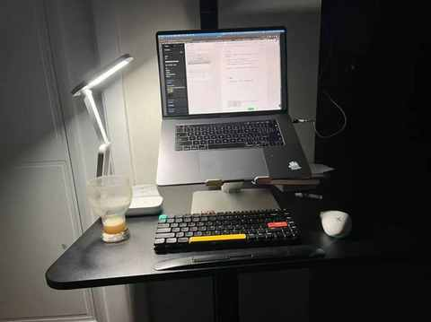
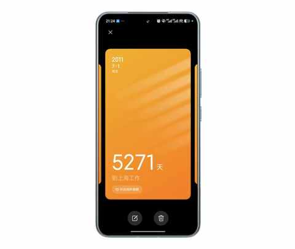

农村、大专生、笨小孩：我的来时路
一、引子
在已经发布了 170 多篇原创文章中，有三篇是关于自己的过往，涉及到自己的部分总是最难写的。
- 从前，有一个笨小孩，他的武器叫“笨功夫”
- 90 年，35 岁，农村大专生，毕业 13年：主动的 i 人运气不会太差
- 连续三年高考落榜：2007-2009年，我的非典型高考故事
今天是日更的 96 天，正好借选题不够用的契机，把一直难写的内容，写一写。
二、来时路
一个人出现在某个时空，某个场景下，必然是有迹可循的。

1️⃣ 某些特质
① 心大
农村的好处之一，必然是良好的生态和自然环境，在农村长大的小孩是无法抑制对周遭环境的探索，尤其是在家门口有条大河的情况。
恰好，家门口就有条大河，一到夏天，便有很多人在河里游泳。
我有两次在河里面险些溺水的经历，很幸运的都被旁边的人救了，然后第二天继续再去河里游泳，仿佛昨天险些溺水的是甲乙丙丁。
可能是天生不怕水，我怕狗，最近跑步都没有再路过一个位置，就是上个月跑步的时候被一只狗追的地方。
② 做事不嫌麻烦
力所能及的事情，都不太会嫌麻烦，小时候家里面来人，少不了要端茶递水，跑腿买烟买菜之类的。
某些比较枯燥的事情，我能坚持做下去，做着做着也就完成了。
2️⃣ 几件小事
① 擦黑板与打开水
高四的时候，痴迷擦黑板，经常一天的黑板都是我主动去擦，即便不是我值日。
高五的时候，热爱打开水，一个寝室的开水我都承包了，一次打四瓶，早上和中午也会打开水放在教室后面，大家一起喝。
这两件事，很好的释放了当时十八九岁旺盛的精力，不仅如此，也能给当时的班集体做一点点微小的贡献。
② 挨个寝室上门催收作业
发生在上大专的两年，为什么是两年呢，因为第三年可以不去，我选择了实习。
当时的班上的男生寝室，不是集中在某一层，而是分布在一层到六层，我经常挨个寝室上门催收作业。
如果遇到同学在打游戏，等他打完便让他抓紧把作业拿给我。
③ 扶摔倒的老人
放在现在的时间节点，再遇到类似场景，估摸着是不敢轻易扶了。
事情发生在 2012 年，刚到上海实习 小半年，几个同学约好一起去同学家吃饭。
我们在地铁站碰头，边走边聊天，在路过一个公交站台的时候，我看到一个老人在下车的时候踉跄了一下，然后摔倒在站台上，我一个箭步冲了过去，等同学们反应过来的时候，我已经把老人扶起来了。
待我走回来他们一起的时候，一个个都目瞪口呆的看着我，纷纷表示下次别扶了。
3️⃣ 可能关键的决策
① 理转文
进入高中之后，住宿和校园没有什么不适应的，但学习的节奏和内容适应的不好，因为理科相关的科目，实在是学不会。
高一下学期，文理分科的时候，选的理科，更学不明白了。学不会和没学明白，都会反映在考试结果上，印象中物理考过 12 分，化学考过 40 多分，六个科目就没有一个学明白的。
刚开始我想到的是退学，不知道当时受到什么的影响，后面家人找关系理转文了。
虽然到了文科班，依然是学渣一枚，但多少上课的东西能听懂了，考试成绩能及格或接近及格了，厌学情绪逐步消解。
如果从高考最终结果来看，学文或学理都是专科，但即便是学渣，在校园里学习的过程更重要。
② 学计算机相关专业
最终敲定选计算机相关专业，可能是因为一个小学同学在这个学校上学，他说看到过我所选专业的学院上课的情况，当时有老师在教室里面给学生发笔记本电脑。
等我如愿入学之后，不到一个月便知道了具体是发生了什么： 是多个班级的同学们团购的笔记本电脑到了，老师把大家召集在一起，方便大家领自己买的电脑！
当时老师在上课说的，因为接下来的课程必须要用到电脑了，学院有团购服务，自愿选择是否参与，我们寝室的都没有参与，都是自己去电脑城买的。
并不后悔当时的选择，大专的两年也是个人成长很快的两年，可谓是收获满满！当时的专业是：网页设计与制作。
毕业后，有同学成了网页设计师，我成了一名前端工程师，更多的同学从事的工作和专业相关度没那么多关联的工作。
③ 到上海实习和工作
在 2011 年的 6 月份，很幸运的找到一份在上海的实习工作，到一家创业公司做美工，做一些设计的活儿也做一些前端的活儿。
当时没有坐火车去上海，先电话面试，再视频面试的方式敲定的实习岗位，用的 QQ 视频，同学们都提醒我，注意别被骗了。
在 7 月1 号的时候，去到公司报到，然后当天和同事一起去了公司安排住宿的地方，后面几天，来了另一位实习生和我住一间。

自此，开启在上海实习和工作之旅……
三、结语
回望这条“来时路”，那个心大、不怕麻烦的笨小孩，正是凭着一股“笨功夫”，一步一脚印地走到了今天。
梳理来路，并非为了怀旧，而是为了看清：是那些莽撞的善意、枯燥的坚持、偶然的选择，共同拼凑出我独一无二的成长地图。
由衷的感谢这一切！
理解来时路，是为了更清晰地看清前方的路。这个故事，未完待续。
近期文章
别再问我省多少油钱了！作为 8年新能源车主，我想说
35岁的这个11月，我竟挑战了这么多“第一次”
日更，是不断了解自己的过程
90年，35岁，日更90天，有了这 3 个意外收获
听播客5年，日均108分钟：这3个收获，让我认识到“声音”的力量
小米高端化成了吗？拿15S Pro当主力机4个月，我有这5个真实感受
嘿！还记得“为QQ等级挂机”的岁月吗？来晒晒你的等级吧！
11 个月，开极氪7X跑两万公里，用车总结及好物分享
一个长居省外中年人的合肥印象：记2025的年第4次合肥行
中年减肥成功2年后，才发现运动形式真不重要，守住这3点才能 不反弹